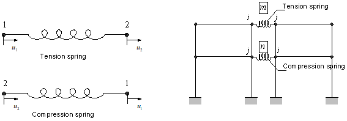
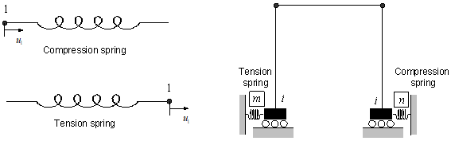

MCK
You can define a 2-noded spring/damper element using the Spring element type, a 1-noded spring/damper element using the EarthSpring type, and a 1-noded concentrated mass using the PointMass type. These elements can have spring/damper properties or concentrated mass defined in any of the X, Y, Z, RX, RY, and RZ directions, as needed. All of these elements use the MCK section type, and each one can have its own material properties including a local coordinate system defined with *CoordinateSystem, TYPE=Orientation, and a scaling factor.
In the following example:
- Spring element 1001 has a spring constant of 10 in the X direction and 20 in the Y direction.
- Element 1002 adjusts the spring constants to 5 and 10 in the X and Y directions, respectively, by applying a scaling factor of 0.5.
- Element 1003 specifies a separate element coordinate system. If the element coordinate system is not specified, the Global Coordinate System (GCS) is used by default.
Example
*Section, Type=Spring, Name=springSection
Spring, X, 10
Spring, Y, 20.
*CoordinateSystem, TYPE=UCS, Name=springCS
0,1,0, -1, 0, 0
*Element, Type=Spring, ELSet=sp
1001, 1001, 1002, S=springSection
1002, 1001, 1002, S=springSection, SF=0.5
1003, 1002, 1003, S=springSection, CS=springCS
Example
*Node
1001, 0,0,0
*Element, Type=PointMass, ELSet=pm
1001, 1001
*Section, Type=MCK, Name=pmSec
Mass, 100., 10., 10. 10 , # m, Ix, Iy, Iz, rx, ry, rz
*Distribution, TYPE=Section
pm, pmSec

Fig. 4.8-2. EarthSpring Element

Fig. 4.8-3. PointMass Element
Sign Convention
For Spring and EarthSpring elements, the formulation is independent of the nodal coordinates of the connected nodes, so care must be taken in interpreting the signs of forces and deformations. Forces and deformations are determined based on the element's local coordinate system (ECS). If the ECS is not specified, it is the same as the global coordinate system (GCS). The following summarizes the sign convention for spring and damper elements.
(1) Spring Element
If no separate local coordinate system is defined (i.e., the local coordinate system is the same as the global coordinate system) and there is no rigid arm, the deformation is defined as the displacement difference between the end node and the start node (\(\delta = u_2 - u_1\)). For example, in a Spring element with a single spring in the X direction, the deformation is given as follows:
A positive value of \(\small\Delta U\) does not indicate tension but rather that the deformation at the end node is greater than at the start node. The sign of the force is interpreted similarly, and the same sign convention applies to the Damper element. Fig. 4.8-4 illustrates the sign convention for the Spring element. For a tension spring, a positive sign for both force and deformation indicates tension, and for a compression spring, a positive sign indicates compression.

Fig. 4.8-4. Sign Convention for a Spring Element Without a Specified Local Coordinate System
If a separate local coordinate system is defined, the deformation is based on the local coordinate system.
For the EarthSpring element, if no separate local coordinate system is defined (i.e., the local coordinate system is the same as the global coordinate system) and there is no rigid arm, the deformation is defined as the displacement of the given node (\(\delta = u_1\)). For example, in an EarthSpring element with a single spring in the X direction, the deformation is given as follows:
In this case, a positive value of \(\small\Delta U\) does not indicate tension but rather that the connected node displacement is negative. The sign of the force is interpreted similarly. The same sign convention applies to the EarthDamper. Fig. 4.8-5 illustrates the sign convention for the EarthSpring element. For a tension spring, a positive sign for both force and deformation indicates tension, and for a compression spring, a positive sign indicates compression.

Fig. 4.8-5. Sign Convention for an EarthSpring Element Without a Specified Local Coordinate System
If a separate local coordinate system is defined, the deformation is based on the local coordinate system.
*Element, Type=Spring
*Element, Type=Spring, ELSet=elset
id, n1, n2{, S=section, CS=cs, SF=sf}
...
Specifications
- No. of nodes: 2
- No. of integration pts.: 1
- Fields: SF=[...], SE=[...], DF=[...], DE=[...] at element center.
- Compatible section: MCK
- Active DOFs: Combination of X, Y, Z, RX, RY, RZ
- CS: ECS with the type of
*CoordinateSystem, TYPE=Orientation - SF: Scaling factor
SF refers to Spring Force, SE refers to Spring Deformation, DF refers to Damping Force, and DE refers to Damping Deformation Rate. The components are determined based on the active degrees of freedom. For example, for a spring using the Y and Z degrees of freedom, they are recorded in the order: SF=[SF.Y, SF.Z], SE=[SE.Y, SE.Z], and so on.
*Element, Type=EarthSpring
*Element, Type=Spring, ELSet=elset
id, n1{, S=section, CS=cs, SF=sf}
...
Specifications
- No. of nodes: 1
- No. of integration points: 1
- Fields: SF=[...], SE=[...], DF=[...], DE=[...] at the element center.
- Compatible section: MCK
- Active DOFs: Combination of X, Y, Z, RX, RY, RZ
- CS: ECS with the type of
*CoordinateSystem, TYPE=Orientation - SF: Scaling factor
Refer to *Element, TYPE=Spring for explanations of SF, SE, DF,
*Element, Type=PointMass
Defines the cross-section for a concentrated mass element.
*Element, Type=PointMass, ELSet=elset
id, n1{, S=section, CS=cs, SF=sf}
...
Specifications
- No. of nodes: 1
- No. of integration pts.: None
- Fields: None
- Compatible section: MCK
- Active DOFs: Combination of X, Y, Z, RX, RY, RZ
- CS: ECS with the type of
*CoordinateSystem, TYPE=Orientation - SF: Scaling factor
*Section, Type=MCK
Defines the cross-section for MCK elements such as Spring, EarthSpring, and PointMass.
*Section, Type=MCK, Name=name
Spring|Damper, oneDof, coef|material, referenceUnitSystem
Mass, m,Ix,Iy,Iz
...
xRigid1,yRigid1,zRigid1, xRigid2,yRigid2,zRigid2
First and subsequent dataline if necessary – Spring|Damper line
- Spring|Damper: Spring or damper
- oneDof: Degree of freedom to which the spring/damper is applied; one of X, Y, Z, RX, RY, or RZ
- coef: Spring or damping coefficient
- material: Reference material model used instead of the spring or damping coefficient. Must support uniaxial material behavior
- referenceUnitSysem: Reference unit system of the material model, used when a material is specified. Optional; defaults to the current unit system. Should be specified in the first data line starting with Spring or Damper
First and subsequent dataline if necessary – Spring|Damper line
- __Mass, m, Ix, Iy, Iz:__ mass (required) and rotational inertia (optional, default 0,0,0)
Optional last dataline
- xRigid1,yRigid1,zRigid1: position vector from ref. node (rigid arm vector) (optional, default 0,0,0)
- xRigid2,yRigid2,zRigid2: position vector from ref. node (rigid arm vector) (optional, default 0,0,0)
The spring constant or damping coefficient is typically defined as a numeric value. However, in cases where nonlinear behavior is expected, a uniaxial material model can be referenced instead. For example, in the case of an X-direction spring, if the uniaxial material model's stress-strain relationship is used, it will be interpreted as a force-displacement relationship. If the referenceUnitSystem and the current unit system specified in *Environment, TYPE=UnitSystem are the same, stress and force, as well as strain and displacement, are converted on a 1:1 basis without any physical interpretation. If the unit systems differ, appropriate internal scaling is applied. For more details, refer to the material command documentation.
Example
*Section, Type=MCK, Name=springSection
Spring, X, 10
Spring, Y, 20.
Damper, X, 5
0,1,0, 0,2,0
*Section, Type=MCK, Name=springSection
Mass, 100
0,1,0, 0,2,0
*Material, TYPE=vonMises, Name=plas
200E9
400E6
*Section, TYPE=MCK, Name=NL
Spring,X, plas